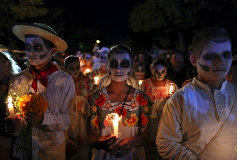
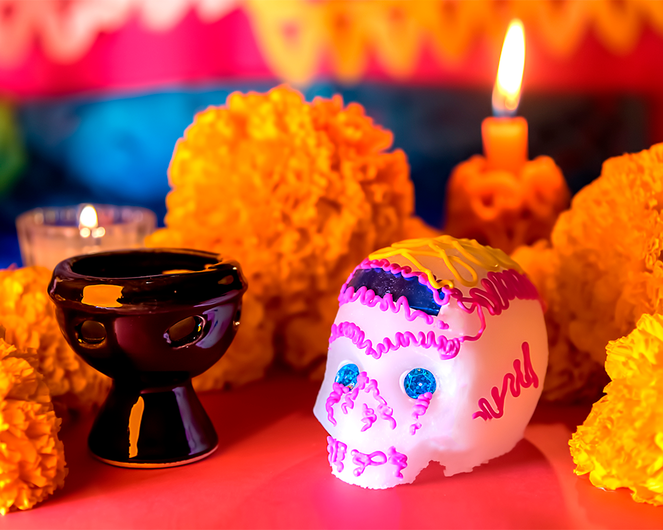

El dia 2 se noviembre se llevara a cabo la guia interactiva de dia de muertos donde se realizara un sorteo con todos los participantes asistentes a al evento.
 Como asistente especial acudira proxima presidenta Claudia Sheimbaun junto con otros invitados a dar apertura al evento.
Asi lo afirmo esta mañana en una entrevista echa por el noticiero Pepito News :"Durante los festejos de dia de muertos estaré en jalisco especificamente en el museo del panteon de belen donde he sido invitada especialmente a dar inicio al evento organizado por el gobierno de guadalajara y ademas de colaborar para el proximo gobierno que tendré el orgullo de ser la primera mujer en la historia de méxico".
Ademas de contar con la presencia de los invitados se llevará un sorteo el cual constará de 2 lugares unicamente donde los premios serán los siguientes: